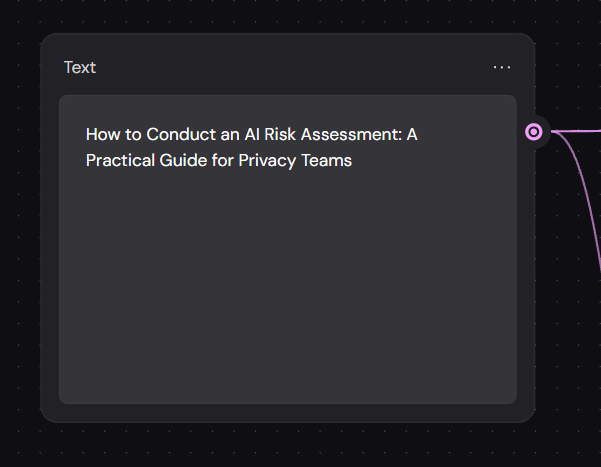
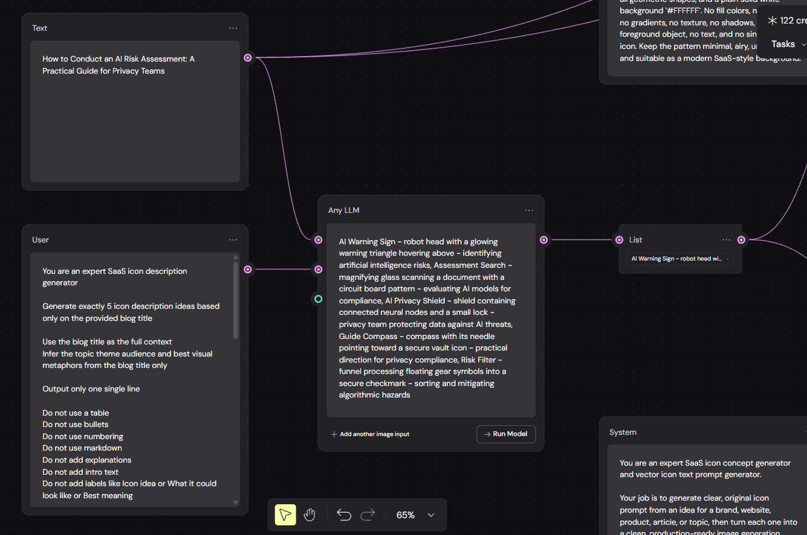
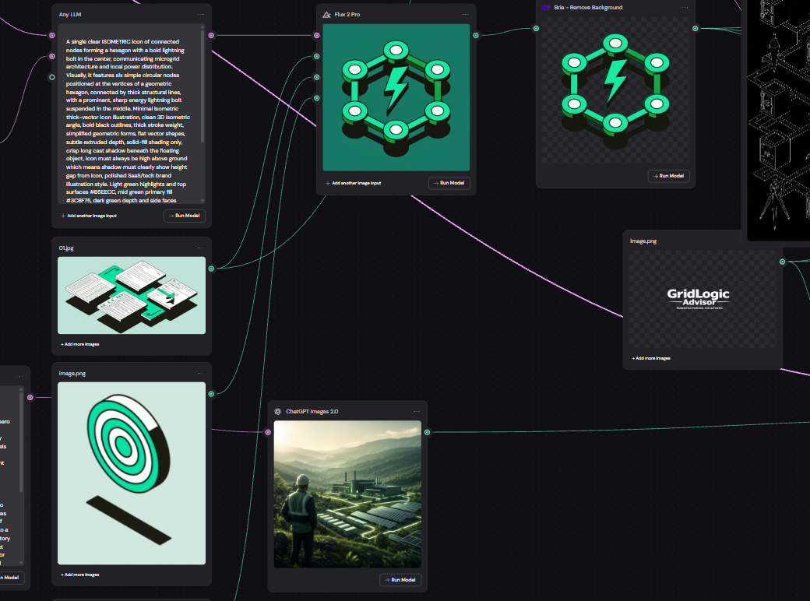
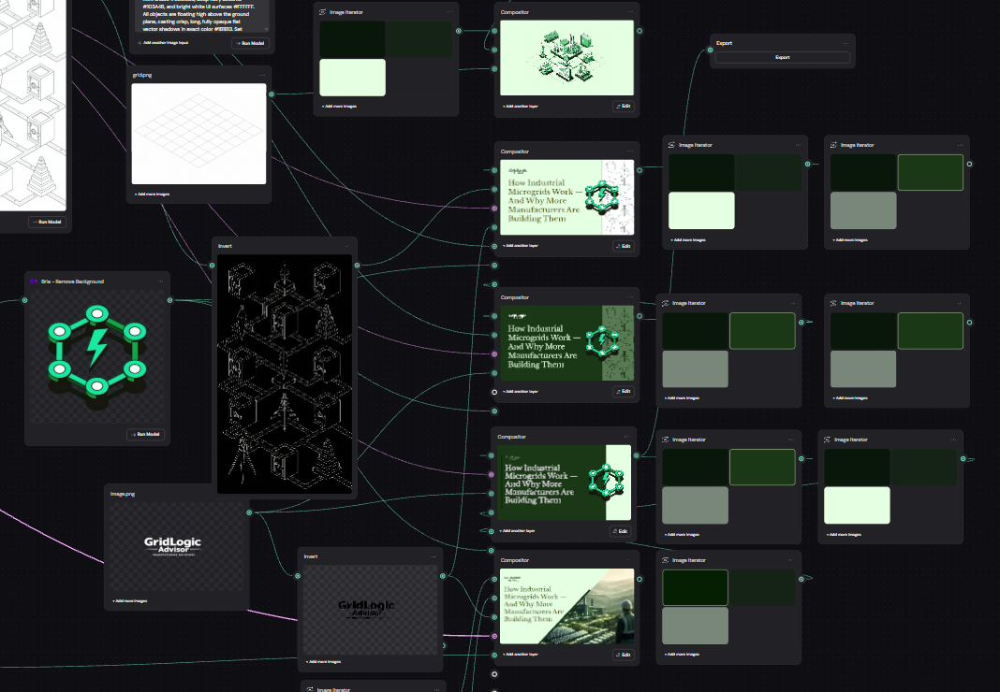

The Process
From Blog Title to Brand-Aligned Hero Image
A repeatable AI-assisted workflow for generating SEO-optimized blog content and matching visual assets — built around a brand's style identity.
Start with the Blog Title
The entire workflow is triggered by a single input: the blog title. No brief, no additional context needed. The title carries enough signal — topic, audience, tone, and intent — to drive every downstream step automatically.

Expand the Title Into Visual Concepts
The title is passed through a visual ideation prompt that infers the topic, theme, audience, emotional angle, and strongest visual metaphor. The system generates multiple concept directions — selecting the one that best communicates the post's core idea, not just its subject matter.

Generate Brand-Style Prompts and Images
The visual concept is passed through style-locked prompt generators — each with the brand's color palette, illustration style, outline rules, and shadow behavior hardcoded. The finalized prompts are then routed to image generation models, producing the icon and multiple hero scene variants with no manual style adjustments needed.

Route to Multiple Compositions — Pick and Publish
The generated assets are automatically assembled into multiple blog header compositions — varying background style, layout, and text placement. The final step is simply choosing which version fits best. The result is a publication-ready hero image, directly matched to the blog's content and brand identity.

Generated Outputs

Full isometric SaaS-style hero — light green palette, connected components

Title-left on pale green — icon centered right, decorative outline pattern

Dark forest green — same icon, higher contrast, white text

Split-panel — dark left for text, pale right for icon

Realistic editorial variant — cinematic perspective, green-toned environment